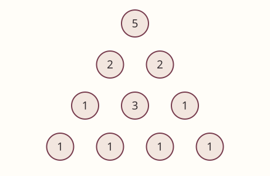
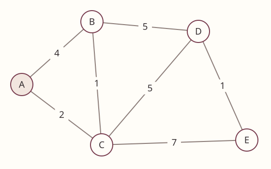
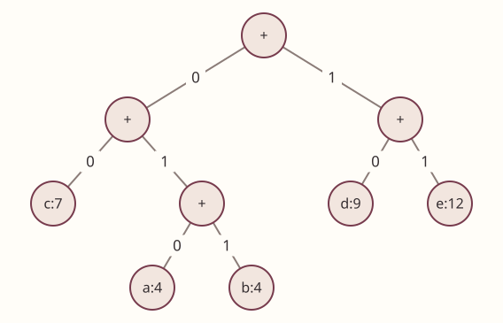

ALGORITHMS 2 · ADVANCED PRACTICE
제4회 모의고사 · 어려움
기출 대비 어려움 · 조건 변형과 복합 추적
60분 · 17문항 · 100점 · 코드 빈칸 8문항. 한국어와 의미가 같은 의사코드 답안을 인정한다. 인덱스는0부터이며 구간·동률·상태 규약은 각 문제를 따른다. 계산기는 실제 공지의 공학용 계산기 허용 조건을 따른다. 빈칸에는 식·조건·문장 등 요구한 단위를 쓴다. 정답은 별도 문서에 있다.
1. 유한성과 순환 반례5점
짝수이면 n//2, 홀수이면 3*n-1로 바꾸며 n=1이면 종료한다. 양의 정수가 입력이다.
① [3점] n=5부터 최초로 같은 값이 다시 나올 때까지 쓰시오.
② [2점] 이 예가 전체 허용 입력의 종료성에 대해 보이는 것을 쓰시오.
2. 재귀 레벨과 삼각 반복5점
n은 2의 거듭제곱이고 op()는 상수 시간이다.
① [2점] a,b,k를,
② [3점] 타이트한 Θ 복잡도를 쓰시오. 제공 공식: T(n)=aT(n/b)+Θ(n^k)에서 a>b^k이면 Θ(n^(log_b a)), 같으면 Θ(n^k log n), 작으면 Θ(n^k).
def solve(n):
if n == 1: return
for _ in range(4): solve(n // 2)
for i in range(n):
for j in range(i): op()
3. 제약이 바꾸는 상태5점
서울→대전의 경로 P를 택했다. 대전→부산 후보 Q는 1시간·통행료2만원, R은 2시간·1만원이다. 전체 통행료 한도는3만원이다.
① [2점] P의 통행료가1만원일 때와2만원일 때 각각 가능한 최단시간 뒷경로를 쓰시오.
② [3점] 도시만 상태로 두고 Q를 저장하면 왜 틀리는지 쓰시오.
4. 출전 순서와 동점 처리5점
상대 순서는[6,9,6,10,4], 우리 선수는[3,6,7,9,10]이다. 동점도 승리다. 매번 이기는 가장 약한 선수, 없으면 가장 약한 선수를 쓴다.
① [3점] 우리 출전 순서와 승리 수,
② [2점] bisect_left와 bisect_right 중 맞는 것과 이유를 쓰시오.
5. 리스트 복사형 조합5점
0..n−1에서 중복 없이 r개를 오름차순으로 고른다. 0≤r≤n이다.
① [2점] 종료 조건,
② [2점] 다음 시작점,
③ [1점] choose(5,3)의 결과 개수를 쓰시오.
def choose(n, r):
result = []
def visit(chosen, start):
if ①＿＿＿＿:
result.append(chosen)
return
for i in range(start, n):
visit(chosen + [i], ②＿＿＿＿)
visit([], 0)
return result
6. 실패한 배치의 복구5점
board는0=빈칸, 1=벽/채움이다. find_first()는 첫 빈칸 좌표 또는 None을 반환한다. place(y,x,t,delta)는 범위 안의 조각 칸에 delta를 적용하고 범위 이탈 또는 겹침이 있으면 False를 반환한다. 실패해도 일부 칸은 변할 수 있다. t는 네 L자 유형이다.
① [2점] 완성 반환값,
② [2점] 복구 호출,
③ [1점] 복구를 if 안에만 두면 왜 틀리는지 쓰시오.
def cover():
pos = find_first()
if pos is None: return ①＿＿＿＿
y, x = pos
total = 0
for t in range(4):
if place(y, x, t, +1):
total += cover()
②＿＿＿＿
return total
7. 최소 길이 조건이 추가된 MAXSUM5점
A는 길이 n≥L인 정수 배열이고 1≤L≤n이다. 길이가 L 이상인 비어 있지 않은 구간의 최대 합을 구한다. prefix[t]=sum(A[:t])이다.
① [2점] 새로 허용되는 시작점의 누적합,
② [2점] 후보 구간합,
③ [1점] A=[-4,3,-2,5,-6],L=3의 답을 쓰시오.
def best_long(A, L):
prefix = [0]
for x in A: prefix.append(prefix[-1] + x)
smallest, answer = float('inf'), -float('inf')
for j in range(L, len(A) + 1):
smallest = min(smallest, ①＿＿＿＿)
answer = max(answer, ②＿＿＿＿)
return answer
8. 고정된 선택 이후의 SST5점
10개 스위치 중3개의 횟수는 이미 하나로 확정했다. 나머지7개만 각각0..3회로 가지치기 없이 DFS한다. 남은 탐색의 루트 깊이는0이다.
① [2점] 리프 수,
② [2점] 전체 노드 수,
③ [1점] 최대 동시 호출 수를 쓰시오. 제공 공식: 전체=(4^(d+1)−1)/3.
9. 최대 합과 경로의 수5점
그림의 삼각형에서 바로 아래 또는 오른쪽 아래로만 이동한다. 위치 경로가 다르면 숫자열이 같아도 별개다.


① [2점] 최대 경로 합,
② [3점] 최대 합을 얻는 경로 수를 쓰시오.
10. 추가 타일과 두 변수 갱신10점
2×n 판에 도미노(회전 허용)와2×2 정사각형을 쓴다. G(0)=G(1)=1이고 n≥2이다.
① [3점] 재귀식,
② [3점] 갱신식,
③ [2점] n=5의 값,
④ [2점] 캐시 없는 plain과 동일 인자 결과를 캐시하는 버전의 시간 차수를 쓰시오.
def plain(n):
if n <= 1: return 1
return ①＿＿＿＿
def rolling(n):
a, b = 1, 1
for _ in range(2, n + 1):
a, b = b, ②＿＿＿＿
return b
11. 중첩 QUADTREE와 읽기 위치5점
유효 문자열 text의 자식은 상좌·상우·하좌·하우 순이다. 함수는 반전 결과와 처리 직후의 다음 읽기 위치를 반환한다.
① [2점] 재귀 시작점,
② [2점] 결합식,
③ [1점] flip("xxbwwbbwb",0)의 결과 문자열을 쓰시오.
def flip(text, pos):
head = text[pos]
pos += 1
if head != 'x': return head, pos
child = []
for _ in range(4):
value, pos = flip(text, ①＿＿＿＿)
child.append(value)
return 'x' + ②＿＿＿＿, pos
12. 배낭의 동률과 최적해 복원10점
w=[2,3,4,5],p=[4,6,8,10],용량7이다. 각 물건은 한 번만 쓴다. memo는 호출 전 빈 딕셔너리다. 동률이면 건너뛴다.
① [3점] take 값,
② [3점] skip 조건,
③ [2점] 최적값,
④ [2점] restore(0,7)의 인덱스 목록을 쓰시오.
def best(i, c):
if i == len(w): return 0
if (i, c) in memo: return memo[i, c]
value = best(i + 1, c)
if w[i] <= c: value = max(value, ①＿＿＿＿)
memo[i, c] = value
return value
def restore(i, c):
if i == len(w): return []
if ②＿＿＿＿: return restore(i + 1, c)
return [i] + restore(i + 1, c - w[i])
13. 단조 스택의 제외 경계5점
판자 높이는 음이 아니고 너비는1이다. 같은 높이는 스택에 유지한다.
① [2점] pop 조건,
② [2점] 남은 스택이 있을 때 너비,
③ [1점] [2,4,4,1,3]의 최대 넓이를 쓰시오.
def area(h):
a = h + [0]
stack, answer = [], 0
for i in range(len(a)):
while stack and ①＿＿＿＿:
j = stack.pop()
width = i if not stack else ②＿＿＿＿
answer = max(answer, a[j] * width)
stack.append(i)
return answer
14. Catalan의 응용별 인덱스5점
C[0]=1이다.
① [2점] 오른쪽 부분의 크기,
② [1점] 키4개의 BST 모양 수,
③ [2점] 행렬4개 곱의 괄호 묶기 수를 쓰시오.
def catalan(n):
C = [0] * (n + 1)
C[0] = 1
for size in range(1, n + 1):
for left in range(size):
C[size] += C[left] * C[①＿＿＿＿]
return C[n]
15. Prim의 동률 갱신5점
무방향 간선은 AB:4,AC:2,BC:1,BD:5,CD:5,CE:7,DE:1이다. A 직후 후보는 B=4(A),C=2(A),D=∞,E=∞이다.


동률 정점은 알파벳순, 부모는 더 작을 때(<)만 갱신한다.
① [2점] 다음 두 선택 정점,
② [3점] 두 정점을 추가·갱신한 뒤 D,E의 비용(부모)을 쓰시오.
16. LIS 개수와 사전순 건너뛰기5점
S=[2,1,4,3,6,5]이다. 엄격 증가·인덱스 순서를 지킨다. L[i]는 i에서 시작하는 최장 길이다.
① [2점] L 배열,
② [1점] 전체 LIS 수,
③ [2점] 값 사전순의1-based5번째 LIS를 쓰시오.
17. Huffman의 동률과 가중 비용10점
그림은 주어진 Huffman 트리다. 왼쪽0,오른쪽1이다. 빈도 a:4,b:4,c:7,d:9,e:12를 쓴다.


① [2점] 전체 노드 수,
② [3점] 0101101100의 해독,
③ [3점] 합병 총비용,
④ [2점] a,b의 좌우만 바꾸고 같은 비트열을 해독할 때 문자열과 총비용이 각각 유지되는지 쓰시오.